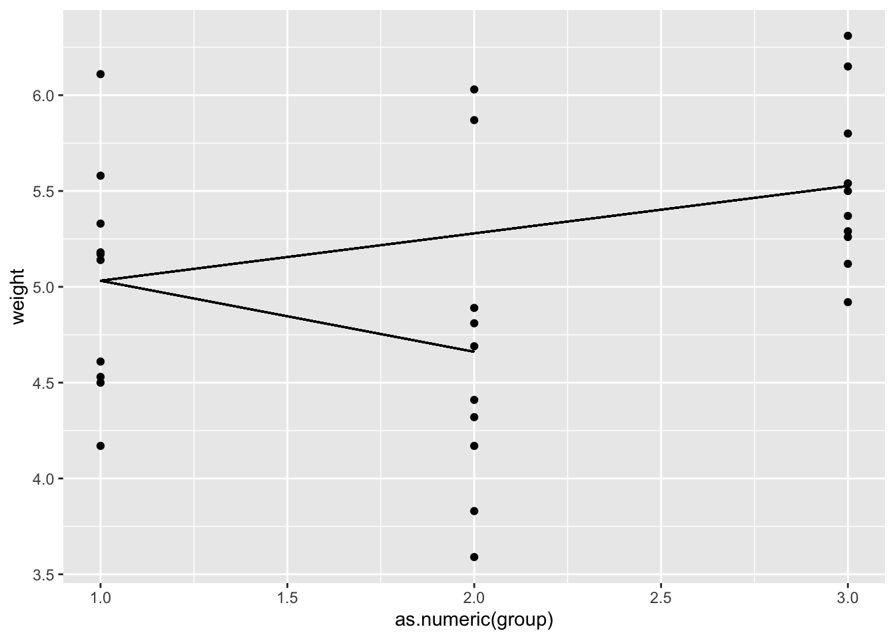
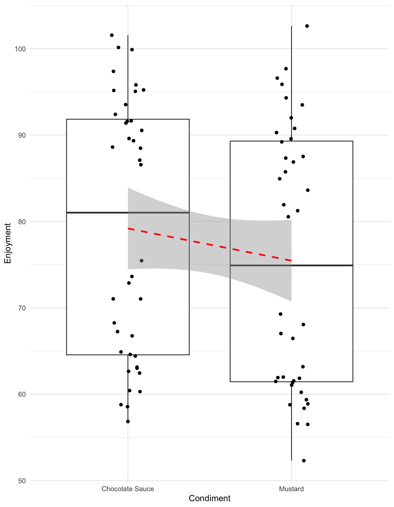
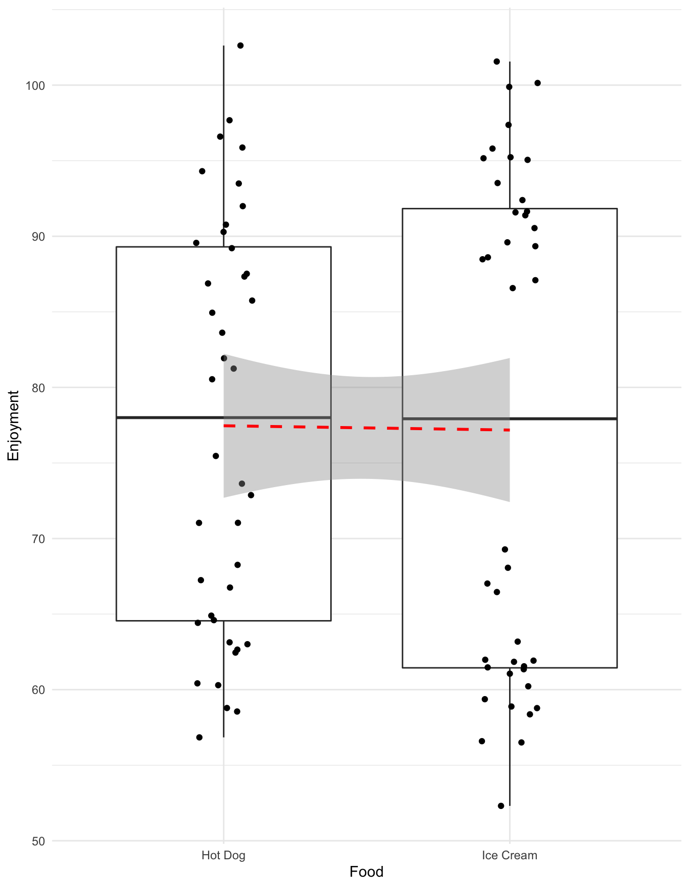
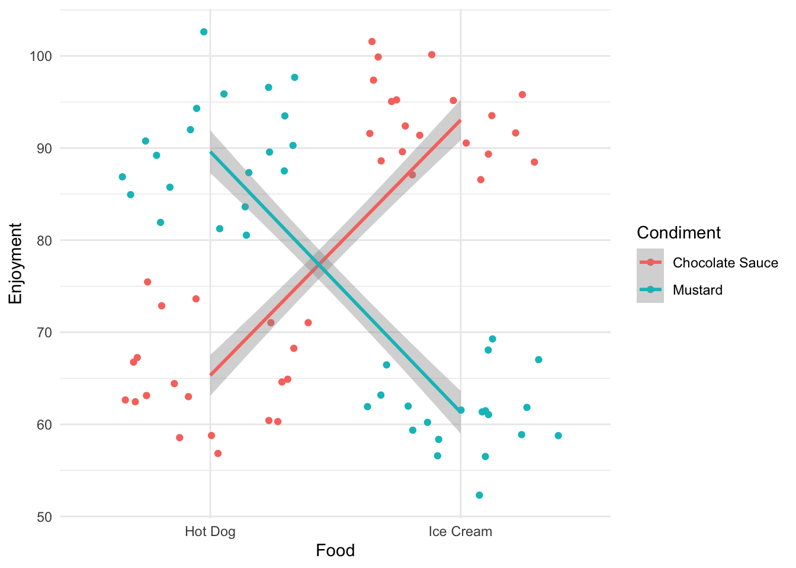
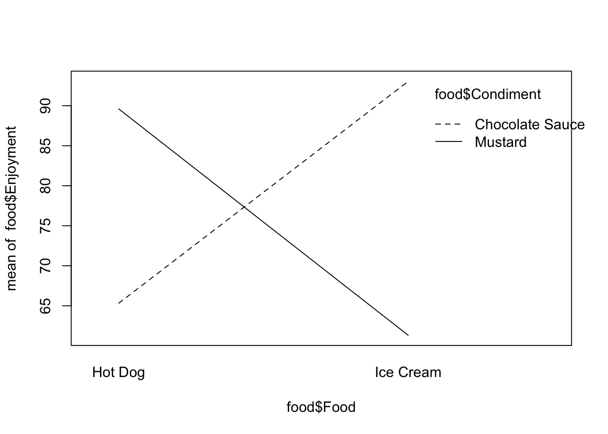
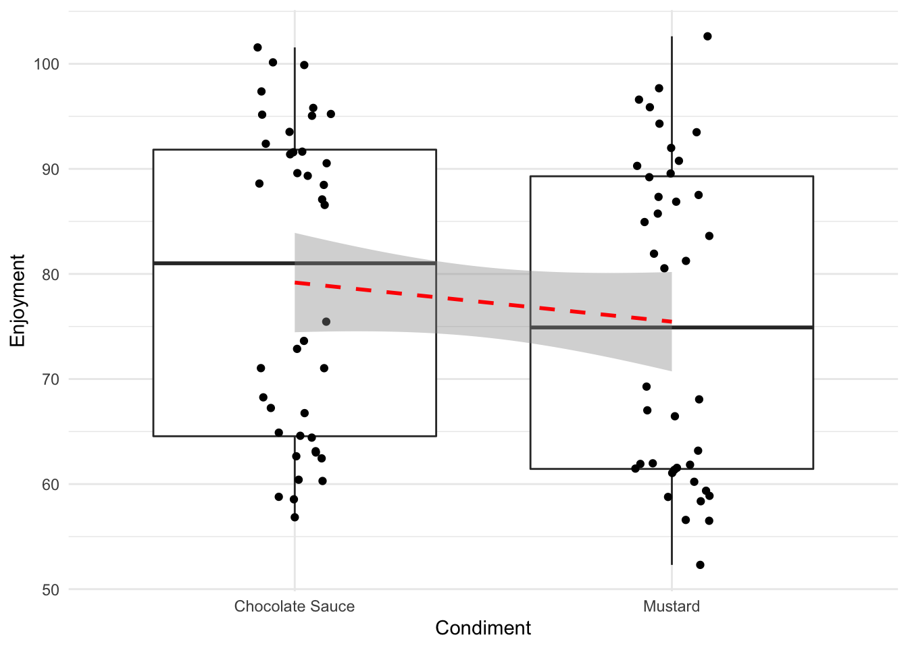
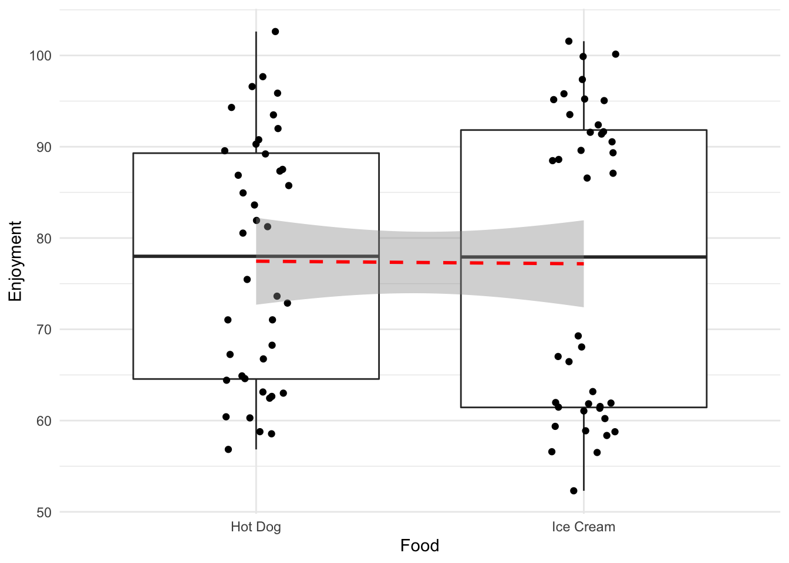
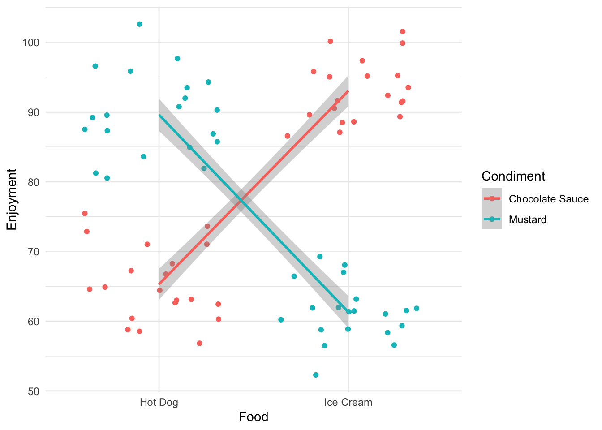

Chapter 5 ANOVA and linear models
5.1 Comparing groups in a single variable
In the last section we looked at using the linear model to compare two groups, in this section we’ll look at using it to compare more than two. One thing to note is that we’re still working with only one explanatory variable, the groups we are talking about are basically different values that the one variable can take. In the PlantGrowth data the variable is called group and the values it takes are ctrl, trt1 and trt2.
TODO GLOSSARY EXPLANATORY VARIABLE, GROUPS LEVELS, FACTOR
You’ll be pleased to know this is where the pay off comes. Any number of groups is no more complicated than the two we’ve already done.
We can visualise the process as simply being a case where we have more than one line to examine.

In terms of a hypothesis test what we’re asking amounts to the same as we saw with the \(t\)-test:
- All flat lines with slopes of zero is equivalent to the Null hypothesis
- \(H_{0}\) the group means are all equal
- At least one \(p\)-value that suggests the slope is rare is equivalent to the Alternative hypothesis
- \(H_{1}\) the group means are not all equal
And putting that in a linear model is no different than before because we still have only one variable.
##
## Call:
## lm(formula = weight ~ group, data = PlantGrowth)
##
## Residuals:
## Min 1Q Median 3Q Max
## -1.0710 -0.4180 -0.0060 0.2627 1.3690
##
## Coefficients:
## Estimate Std. Error t value Pr(>|t|)
## (Intercept) 5.0320 0.1971 25.527 <2e-16 ***
## grouptrt1 -0.3710 0.2788 -1.331 0.1944
## grouptrt2 0.4940 0.2788 1.772 0.0877 .
## ---
## Signif. codes: 0 '***' 0.001 '**' 0.01 '*' 0.05 '.' 0.1 ' ' 1
##
## Residual standard error: 0.6234 on 27 degrees of freedom
## Multiple R-squared: 0.2641, Adjusted R-squared: 0.2096
## F-statistic: 4.846 on 2 and 27 DF, p-value: 0.01591Great! so we handle the extra levels of the variable nearly perfectly. There are two lines of coefficient results, the first showing the gradient between the ctrl and trt1 and the second showing the gradient between ctrl and trt2. The ctrl data has clearly been used as a common reference - this is the default design in the function, the first group in the data becomes the common reference. Here we get away with it, as we do want the first level to be the common reference. When you need to change the order, you can set the reference level explicitly.
df <- PlantGrowth
df$group<- relevel(df$group, ref="trt2")
model2 <- lm(weight ~ group , data = df,)
summary(model2)##
## Call:
## lm(formula = weight ~ group, data = df)
##
## Residuals:
## Min 1Q Median 3Q Max
## -1.0710 -0.4180 -0.0060 0.2627 1.3690
##
## Coefficients:
## Estimate Std. Error t value Pr(>|t|)
## (Intercept) 5.5260 0.1971 28.032 < 2e-16 ***
## groupctrl -0.4940 0.2788 -1.772 0.08768 .
## grouptrt1 -0.8650 0.2788 -3.103 0.00446 **
## ---
## Signif. codes: 0 '***' 0.001 '**' 0.01 '*' 0.05 '.' 0.1 ' ' 1
##
## Residual standard error: 0.6234 on 27 degrees of freedom
## Multiple R-squared: 0.2641, Adjusted R-squared: 0.2096
## F-statistic: 4.846 on 2 and 27 DF, p-value: 0.01591And now we see the trt2 as common reference against the ctrl and trt1 groups.
In these data ctrl vs trt1 appears to be significant according to the linear model model1 and trt1 vs trt2 appears to be significant according to the linear model model2 but we did need to create two models to do this. If this seems longwinded or illogical, then that’s fair. The two models have the same data and specification so should have the same results in - it was really just the way we were ordering things in the data that was different. The real problem is just one of bookkeeping. The linear models are rich and not all the comparisons that can be done with them can easily be written in summary(model). To answer specific questions from an analysis technique for getting specific comparisions (or contrasts in the statistics jargon) from linear models has been invented, that technique is called ANOVA (Analysis of Variance).
5.1.1 One-Way comparisons
The situation where we have just one variable is called a ‘One-Way’ ANOVA.
Now that we have a solid way of thinking about contrasts as the slope between the categories, we can think of ANOVA as a tool for pulling out the significances in the best way. All we have to do is learn how to specify the contrasts for ANOVA.
Every time we do ANOVA we need a model to feed into it. Here’s the most common way ANOVA is done in R, with the aov() and TukeyHSD() functions, you’ve probably seen this before.
## Tukey multiple comparisons of means
## 95% family-wise confidence level
##
## Fit: aov(formula = model)
##
## $group
## diff lwr upr p adj
## trt1-ctrl -0.371 -1.0622161 0.3202161 0.3908711
## trt2-ctrl 0.494 -0.1972161 1.1852161 0.1979960
## trt2-trt1 0.865 0.1737839 1.5562161 0.0120064It seems to do the job, though the ‘flavour’ of ANOVA it does is limited and applies only when the standard assumptions of ANOVA are met.
A better alternative is the multcomp package function glht() (general linear model hypothesis test), which is more flexible with respect to which designs and contrasts you can get out, at the expense of being a little more complicated. The basic case is straightforward though.
##
## Simultaneous Tests for General Linear Hypotheses
##
## Multiple Comparisons of Means: Tukey Contrasts
##
##
## Fit: lm(formula = weight ~ group, data = PlantGrowth)
##
## Linear Hypotheses:
## Estimate Std. Error t value Pr(>|t|)
## trt1 - ctrl == 0 -0.3710 0.2788 -1.331 0.391
## trt2 - ctrl == 0 0.4940 0.2788 1.772 0.198
## trt2 - trt1 == 0 0.8650 0.2788 3.103 0.012 *
## ---
## Signif. codes: 0 '***' 0.001 '**' 0.01 '*' 0.05 '.' 0.1 ' ' 1
## (Adjusted p values reported -- single-step method)The linfct option just takes a specification of the things to be tested, and the mcp() function is a helper that generates the comparison based on a text description, here that the variable group should be analysed by ‘Tukey’.
By printing the summary we see the contrast hypotheses writ explicitly (e.g. the difference between ctrl and trt1 is 0) and the conclusions: there is no evidence to suggest either treatment is different from the control, but the difference we observe between the group1 and group2 occurs by chance only about 1.2 percent of the time.
We’ll see more of how to use glht() as we go.
5.2 Comparing groups in multiple variables
Often we’ll have experimental data where we have more than one explanatory variable, for example, temperature and fertiliser and want to know the effects of each on a response variable like yield.
5.2.1 Two-Way comparisons
Such a situation is complicated over the single case as we have more the possibility of an interaction between the variables to consider. The case where we want to look at ANOVA for models with an two variables and an interaction effect is called a Two-Way ANOVA.
Let’s work through an example that highlights that. Here’s some data on reported enjoyment of some food, with different condiments added
| Food | Condiment | Enjoyment |
|---|---|---|
| Hot Dog | Mustard | 94.30379 |
| Hot Dog | Mustard | 87.33326 |
| Ice Cream | Mustard | 66.45707 |
| Ice Cream | Chocolate Sauce | 95.22787 |
| Ice Cream | Mustard | 56.58818 |
Looking at those in the way we have already - each variable individually - then we would generate the following plots and lines to examine.

Without rushing ahead to do the modelling, we see that chocolate sauce has a slightly greater effect on enjoyment than mustard, whereas the enjoyment of the two food types is the same. So the conclusion would be ‘use chocolate sauce to enhance your enjoyment of Hot Dogs or Ice Cream’.
Let’s see what the model says, in specifying the second variable can be added with a + and
##
## Call:
## lm(formula = Enjoyment ~ Food + Condiment, data = food)
##
## Residuals:
## Min 1Q Median 3Q Max
## -23.0067 -14.3016 0.5382 13.4187 27.0218
##
## Coefficients:
## Estimate Std. Error t value Pr(>|t|)
## (Intercept) 79.3237 2.9278 27.093 <2e-16 ***
## FoodIce Cream -0.2826 3.3807 -0.084 0.934
## CondimentMustard -3.7251 3.3807 -1.102 0.274
## ---
## Signif. codes: 0 '***' 0.001 '**' 0.01 '*' 0.05 '.' 0.1 ' ' 1
##
## Residual standard error: 15.12 on 77 degrees of freedom
## Multiple R-squared: 0.01561, Adjusted R-squared: -0.009958
## F-statistic: 0.6105 on 2 and 77 DF, p-value: 0.5457The summary isn’t promising, it looks like neither is significant. Let’s do the ANOVA and get conclusive proof.
The call to glht() is a bit more complicated, but not much
##
## Simultaneous Tests for General Linear Hypotheses
##
## Multiple Comparisons of Means: Tukey Contrasts
##
##
## Fit: lm(formula = Enjoyment ~ Food + Condiment, data = food)
##
## Linear Hypotheses:
## Estimate Std. Error t value Pr(>|t|)
## Food: Ice Cream - Hot Dog == 0 -0.2826 3.3807 -0.084 0.996
## Condiment: Mustard - Chocolate Sauce == 0 -3.7251 3.3807 -1.102 0.471
## (Adjusted p values reported -- single-step method)Neither factor seems to be significant. Hmm. This seems like a slightly strange conclusion - and it is. The presence of two variables is confusing this approach. Look at what we get if we split the data by the two variables at once.
5.2.2 Interaction between variables

Ok! That’s very different and very much clearer. The enjoyment is very much dependent on the combination of food and condiment. This is a classic case of interaction between variables. You get results that are conditional on the combined values of the variables.
The cross-over of the lines is a visual diagnostic of the presence of an interaction effect.
5.2.3 Modelling an interaction effect
The interaction effect should be checked for in the linear model. It is quite easy to check for and requires a slight extension to syntax. An interaction can be specified with the :.
(there is also a short hand that allows the whole thing to be specified in one term *, which is used like lm(Enjoyment ~ Food * Condiment, data=food))
and when we print the summary() we get the book-keeping issue, but we can see the usual stuff.
##
## Call:
## lm(formula = Enjoyment ~ Food + Condiment + Food:Condiment, data = food)
##
## Residuals:
## Min 1Q Median 3Q Max
## -9.068 -3.068 -0.407 2.802 13.015
##
## Coefficients:
## Estimate Std. Error t value Pr(>|t|)
## (Intercept) 65.317 1.120 58.34 <2e-16 ***
## FoodIce Cream 27.731 1.583 17.52 <2e-16 ***
## CondimentMustard 24.289 1.583 15.34 <2e-16 ***
## FoodIce Cream:CondimentMustard -56.028 2.239 -25.02 <2e-16 ***
## ---
## Signif. codes: 0 '***' 0.001 '**' 0.01 '*' 0.05 '.' 0.1 ' ' 1
##
## Residual standard error: 5.007 on 76 degrees of freedom
## Multiple R-squared: 0.8935, Adjusted R-squared: 0.8892
## F-statistic: 212.4 on 3 and 76 DF, p-value: < 2.2e-16This seems much more like what we expect from the graph, significance everywhere! Basically what the summary is saying is that the Food, Condiment and both together have an effect on the reported enjoyment. But are the contrasts presented here really all the ones we’re interested in? They aren’t here, and this is generally the case so we need to know how to extract them. First we must decide what the contrasts we’re going to check must be. In our linear model way of thinking this means which lines do we want to test for zero slopes? There can be many lines we could imagine depending on how we decide to group the data and the number of variables that we have. Let’s define which we’ll look at before we begin.
Let’s see whether food alone or condiment alone has an effect. This would be like the first situation we looked at,
## `geom_smooth()` using formula 'y ~ x'## `geom_smooth()` using formula 'y ~ x'
in the way that the output we’ve seen so far has it, this would be
Hot Dog - Ice Cream == 0 Chocolate Sauce - Mustard == 0
Let’s also see whether food * condiment has an effect. This would be like the interaction situation.
Hot Dog:Mustard - Ice Cream:Mustard == 0 Hot Dog:Chocolate Sauce - Ice Cream:Chocolate Sauce == 0
## `geom_smooth()` using formula 'y ~ x'
So we have four lines of interest to look at - four contrasts. For the two main non-interaction effects we can look at these as we’ve done before, using the mcp() function.
## Warning in mcp2matrix(model, linfct = linfct): covariate interactions found --
## default contrast might be inappropriate
## Warning in mcp2matrix(model, linfct = linfct): covariate interactions found --
## default contrast might be inappropriate##
## Simultaneous Tests for General Linear Hypotheses
##
## Multiple Comparisons of Means: Tukey Contrasts
##
##
## Fit: lm(formula = Enjoyment ~ Food + Condiment + Food:Condiment, data = food)
##
## Linear Hypotheses:
## Estimate Std. Error t value Pr(>|t|)
## Food: Ice Cream - Hot Dog == 0 27.731 1.583 17.52 <1e-10
## Condiment: Mustard - Chocolate Sauce == 0 24.289 1.583 15.34 <1e-10
##
## Food: Ice Cream - Hot Dog == 0 ***
## Condiment: Mustard - Chocolate Sauce == 0 ***
## ---
## Signif. codes: 0 '***' 0.001 '**' 0.01 '*' 0.05 '.' 0.1 ' ' 1
## (Adjusted p values reported -- single-step method)5.2.3.1 Doing all pairwise interactions
Although we’re interested in only two specific interactions, usually it’s easier to do all pairwise comparisons in one step, as we don’t often have so many interacting variables that it gets unwieldy. To do this we must add an interaction column to our data and model that.
food_2 <- food %>% mutate(FoodCondiment = interaction(Food, Condiment))
int_model2 <- lm(Enjoyment ~ FoodCondiment, data = food_2)
summary(glht(int_model2, linfct = mcp(FoodCondiment = "Tukey")))##
## Simultaneous Tests for General Linear Hypotheses
##
## Multiple Comparisons of Means: Tukey Contrasts
##
##
## Fit: lm(formula = Enjoyment ~ FoodCondiment, data = food_2)
##
## Linear Hypotheses:
## Estimate Std. Error
## Ice Cream.Chocolate Sauce - Hot Dog.Chocolate Sauce == 0 27.731 1.583
## Hot Dog.Mustard - Hot Dog.Chocolate Sauce == 0 24.289 1.583
## Ice Cream.Mustard - Hot Dog.Chocolate Sauce == 0 -4.008 1.583
## Hot Dog.Mustard - Ice Cream.Chocolate Sauce == 0 -3.442 1.583
## Ice Cream.Mustard - Ice Cream.Chocolate Sauce == 0 -31.739 1.583
## Ice Cream.Mustard - Hot Dog.Mustard == 0 -28.297 1.583
## t value Pr(>|t|)
## Ice Cream.Chocolate Sauce - Hot Dog.Chocolate Sauce == 0 17.515 <0.001 ***
## Hot Dog.Mustard - Hot Dog.Chocolate Sauce == 0 15.341 <0.001 ***
## Ice Cream.Mustard - Hot Dog.Chocolate Sauce == 0 -2.531 0.0635 .
## Hot Dog.Mustard - Ice Cream.Chocolate Sauce == 0 -2.174 0.1397
## Ice Cream.Mustard - Ice Cream.Chocolate Sauce == 0 -20.047 <0.001 ***
## Ice Cream.Mustard - Hot Dog.Mustard == 0 -17.872 <0.001 ***
## ---
## Signif. codes: 0 '***' 0.001 '**' 0.01 '*' 0.05 '.' 0.1 ' ' 1
## (Adjusted p values reported -- single-step method)And now we can see all possible interaction groupings and lines. We can see that the signficances make good sense. The Hot Dog and Mustard is no more enjoyable than the Ice Cream and Chocolate Sauce, the Ice Cream and Mustard is no more enjoyable than the Hot Dog and Chocolate Sauce and all the other match and mismatch food and condiments are as we might expect from this very obviously loaded example.
We said we wanted to look specifically at the interaction between the Hot Dog with Mustard and Ice Cream with Mustard - we can see that there is a significant difference in enjoyment, about 17 points. Similarly Hot Dog with Chocolate Sauce is less enjoyable than Ice Cream with Chocolate Sauce, by about 27 points.
5.2.3.2 Testing specific interactions
The table above, as ever, is a bit rich and confusing, you can get a simpler output at the expense of some more work. For the two sets of interactions we’re interested in we can look at them specifically but naming them explicitly in glht is trickier than we’ve done so far.
We have to specify a matrix of comparisons ourselves. The first step is to work out all the different interactions of the levels of the food*condiment interaction term. We can do that with the interaction() function
## [1] Hot Dog:Mustard Hot Dog:Mustard Hot Dog:Mustard Hot Dog:Mustard
## [5] Hot Dog:Mustard Hot Dog:Mustard
## 4 Levels: Hot Dog:Chocolate Sauce ... Ice Cream:MustardWe can see that this is just a factor object with all the combinations of Food and Condiment. Using the levels() function gives us all the unique values in the order that R will use them.
## [1] "Hot Dog:Chocolate Sauce" "Ice Cream:Chocolate Sauce"
## [3] "Hot Dog:Mustard" "Ice Cream:Mustard"Now we can make the matrix, our eventual matrix will look like this
| Hot Dog:Chocolate Sauce | Ice Cream:Chocolate Sauce | Hot Dog:Mustard | Ice Cream:Mustard | |
|---|---|---|---|---|
| Hot Dog:Mustard - Ice Cream:Mustard | 0 | 0 | 1 | -1 |
| Hot Dog:Chocolate Sauce - Ice Cream:Chocolate Sauce | 1 | -1 | 0 | 0 |
We can see that there is a row per comparison and a column per possible interaction. At the intersection we write a zero if we don’t want to include that possible interaction in the contrast, a 1 if we want it to be the first part and a -1 if we want it to be the second part (IE, the part after the minus sign).
As the levels() function gives us the order, we set up the rows one by one and join them together.
Now we can stick them together, use the levels() function as the column names and add row names. Note you can call the rows what you like, so you dont have to use the long names, but the columns must be named and ordered according to the levels() function
contr_of_interest <- rbind(HD.M_IC.M, HD.C_IC.C)
colnames(contr_of_interest) <- levels(f_c_interactions)
rownames(contr_of_interest) <- c("HD:M - IC:M",
"HD:CS - IC:CS")
contr_of_interest## Hot Dog:Chocolate Sauce Ice Cream:Chocolate Sauce Hot Dog:Mustard
## HD:M - IC:M 0 0 1
## HD:CS - IC:CS 1 -1 0
## Ice Cream:Mustard
## HD:M - IC:M -1
## HD:CS - IC:CS 0Now we can do the test using the custom matrix.
##
## Simultaneous Tests for General Linear Hypotheses
##
## Fit: lm(formula = Enjoyment ~ Food + Condiment + Food:Condiment, data = food)
##
## Linear Hypotheses:
## Estimate Std. Error t value Pr(>|t|)
## HD:M - IC:M == 0 80.317 3.540 22.69 <1e-10 ***
## HD:CS - IC:CS == 0 37.585 2.503 15.01 <1e-10 ***
## ---
## Signif. codes: 0 '***' 0.001 '**' 0.01 '*' 0.05 '.' 0.1 ' ' 1
## (Adjusted p values reported -- single-step method)And there we have the specific interaction contrasts.
H0: The means of all month groups are equal H1: The mean of at least one month group is different
H0: The means of the gender groups are equal H1: The means of the gender groups are different
H0: There is no interaction between the month and gender H1: There is interaction between the month and gender
5.3 Occam’s Razor
Simplest model - Compost data Add compost data to package. ————————————–
tasks one way, two way and three way anova on palmers penguins
use interaction.plot() on food to reproduce interaction plot. What would no interaction look like (flat lines)
compare and keep simplest model.
Look at some results tables to see how much effects are (examine the estimate columns).
## species island bill_length_mm bill_depth_mm
## Adelie :152 Biscoe :168 Min. :32.10 Min. :13.10
## Chinstrap: 68 Dream :124 1st Qu.:39.23 1st Qu.:15.60
## Gentoo :124 Torgersen: 52 Median :44.45 Median :17.30
## Mean :43.92 Mean :17.15
## 3rd Qu.:48.50 3rd Qu.:18.70
## Max. :59.60 Max. :21.50
## NA's :2 NA's :2
## flipper_length_mm body_mass_g sex
## Min. :172.0 Min. :2700 female:165
## 1st Qu.:190.0 1st Qu.:3550 male :168
## Median :197.0 Median :4050 NA's : 11
## Mean :200.9 Mean :4202
## 3rd Qu.:213.0 3rd Qu.:4750
## Max. :231.0 Max. :6300
## NA's :2 NA's :2ggplot(penguins) + aes(species, bill_length_mm) + geom_jitter(aes(colour = sex), position = position_dodge(width = 0.5))
model <- lm(bill_length_mm ~ species + sex, data = penguins)
summary(model)
# setup comparisons explicitly
comps <- mcp( species = c("Chinstrap - Gentoo = 0",
"Chinstrap - Adelie = 0"
),
sex = c("male - female = 0")
)
summary(glht(model, linfct = comps))
## or steal from individual comparisons...
sex_comps <- glht(model, mcp(sex = "Tukey"))$linfct
species_comps <- glht(model, mcp(species = "Tukey"))$linfct
comps <- rbind(sex_comps, species_comps)
summary(glht(model, linfct = comps))5.4 interactions of variables - synergistic effects
line is visualised as … blah blah
model2 <- lm(bill_length_mm ~ species + sex + species:sex, data = penguins)
summary(model2)
# setup comparisons explicitly
# comps <- mcp( species = c("Chinstrap - Gentoo = 0",
# "Chinstrap - Adelie = 0"
# ),
# sex = c("male - female = 0"),
# species:sex = c("Chinstrap-male - Gentoo-female")
# )
#summary(glht(model2, linfct = comps))
library(dplyr)
penguins %>% mutate(double = if_else(sex == 'male' & species == 'Chinstrap', "male_Chinstrap", "other")) %>%
ggplot() +
aes(species, bill_length_mm) + geom_jitter(aes(colour = sex), position = position_dodge(width = 0.5)) + facet_wrap(~ double)
supplement = rep(c("Formula X1","Formula X2"), 16)
compost = rep(c("John Innes #1", "John Innes #2", "John Innes #2", "John Innes #1"), 8)
size = rep(runif(32))
df <- tibble::tibble(
supplement = supplement,
compost = compost,
size = size
) %>%
mutate(size = if_else( (supplement == "Formula X1" & compost == "John Innes #2"), (size + 1), size) )
df %>% filter(supplement == "Formula X1", compost == "John Innes #2")
df %>%
ggplot() + aes(compost, size) + geom_point(aes(colour = supplement), position = position_dodge(width = 0.5))
#mod <- lm(new_val ~ var1 + var2 + var1*var2, data = df)
#summary(mod)
#summary(glht(model, linfct = mcp(var1 = "Tukey")))
#contrasts(as.factor(df$var1))5.5 Summary
That’s all we need to do to perform ANOVAs with linear models - which always use linear models anyway.